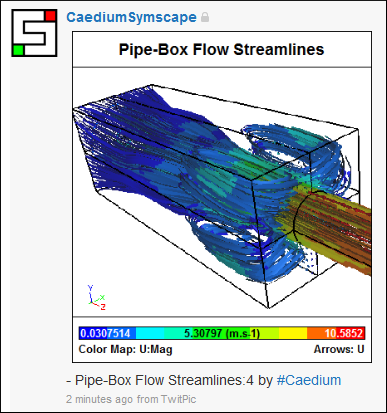
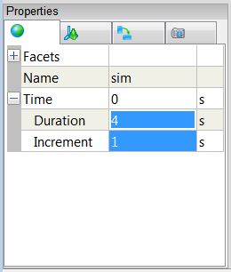
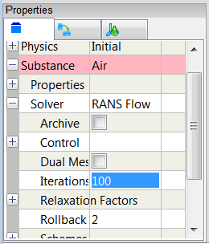
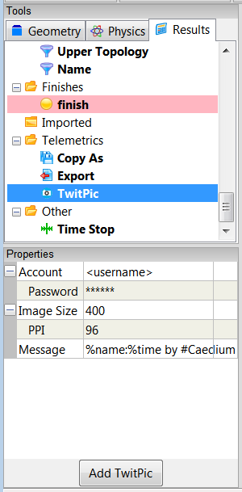
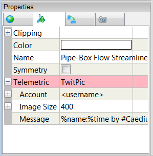
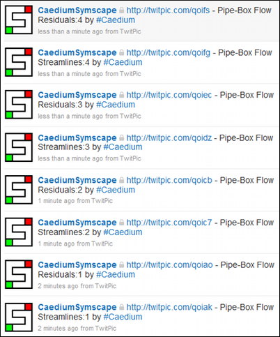

Telemetry Posting to TwitPic and Twitter
Update: This feature is deprecated in the latest version of Caedium. The TwitPic API that this feature used is no longer available.
Caedium supports automated simulation telemetry by posting images to TwitPic and posting associated messages (tweets) to Twitter. This is useful if you want to check on the progress of a Computation Fluid Dynamics (CFD) simulation while you are away from your simulation's host machine and you have access to Twitter. It is also a great way to share CFD simulation progress with other colleagues on Twitter in real-time.

Assumptions
- You have downloaded, installed, and activated Caedium RANS Flow or Caedium Professional.
- You are familiar with Caedium essentials.
- You have a Twitter account.
- You have configured a RANS flow simulation (e.g., "Incompressible Flow Through a Pipe into a Box"), but you have not yet clicked the Run button
 on the Home Toolbar.
on the Home Toolbar.
Set Simulation Time Duration and Increment Properties
First you need to decide how many posts you are going to send to TwitPic, which is determined by dividing the simulation time duration by the simulation time increment. For example, Duration = 4 and Increment = 1 would result in 4 posts.
Right-click the View Window background and double-click sim in the Select dialog. In the Properties Panel, select the Simulation tab  . Expand the Time property. Set the Duration and Increment properties so that Duration / Increment matches the number of posts you want to send to TwitPic to perform.
. Expand the Time property. Set the Duration and Increment properties so that Duration / Increment matches the number of posts you want to send to TwitPic to perform.

Set Iterations per Increment
Right-click on an edge of the flow volume in the View Window, double-click the first volume in the Select dialog and select Properties. In the Properties Panel select the Volume tab  . Set the Substance: Air->Solver: RANS Flow->Iterations property to the number of iterations per simulation time increment.
. Set the Substance: Air->Solver: RANS Flow->Iterations property to the number of iterations per simulation time increment.
For example, for 400 iterations with duration = 4 and increment = 1, you would set Iterations = 100.

Set Names
It is a good idea to set the name of the window to something meaningful, as the default message will use it as the title in the tweet.
In a View Window, right-click on the background and double-click sim in the Select dialog. In the Properties Panel select the View tab  and set the Name property to your chosen title, e.g., Pipe-Box Flow Streamlines.
and set the Name property to your chosen title, e.g., Pipe-Box Flow Streamlines.
In a Plot or Monitor Window, right-click on the plot area and select Properties. Then in the Properties Panel set the Name property to your chosen title, e.g., Pipe-Box Flow Residuals.
Use TwitPic Tool
Select the Results Tool Palette and select Telemetrics->TwitPic. In the Properties Panel, set Account to your Twitter username and Password to your Twitter password. Drag and drop the Other->TwitPic tool onto the background of the window (View, Plot or Monitor) that you want to post and select Done.

The TwitPic tool will be added to the View tab properties for a View Window and will be added to the main properties for a Plot or Monitor. The property will be highlighted in pink, which indicates that it can be deleted.

The format of the tweet is determined by the Message property, which has the default string '%name:%time by #Caedium', where %name = <window name> and %time = <simulation time>
An example of a default tweet for %name = Pipe-Box Flow Streamlines and %time = 1 is 'Pipe-Box Flow Streamlines:1 by #Caedium'
Run the Simulation
Click Run to run the simulation and automatically post to TwitPic and Twitter.
Every time the simulation time changes it will trigger a post to TwitPic and Twitter. Posts are triggered by the Run button and also by all the other simulation controls, i.e., Start, Previous, Next, and End.
See the image below for an example of the tweets in Twitter for a View Window named "Pipe-Box Flow Streamlines" and a Residuals Monitor named "Pipe-Box Flow Residuals."

Once the simulation run is complete, you will need to delete the Telemetric: TwitPic property to stop further tweets. To do this, open the Properties Panel for the associated window, right-click on Telemetric: TwitPic and select Delete.
Note
A similar setup and trigger mechanism is also used for the other Telemetric tools:
- Copy As - save a copy of the simulation (.sym) when triggered
- Export - export any file type when triggered
Feedback
Questions? Ideas? Problems?